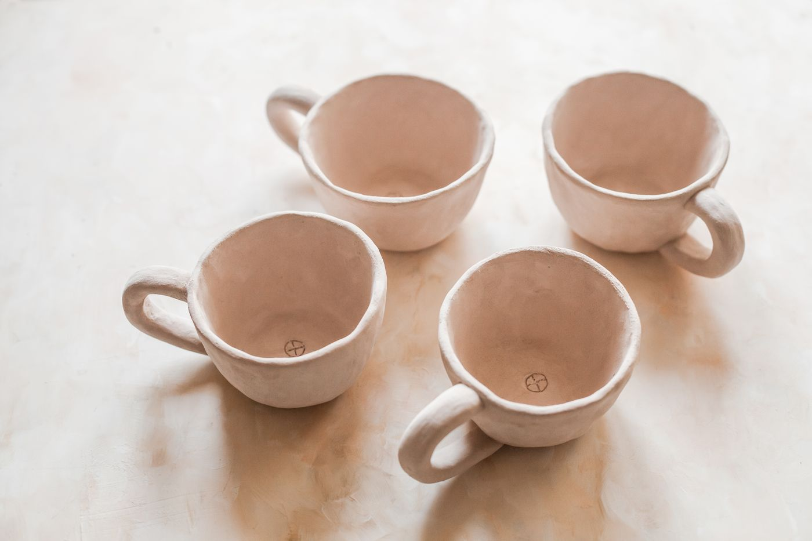
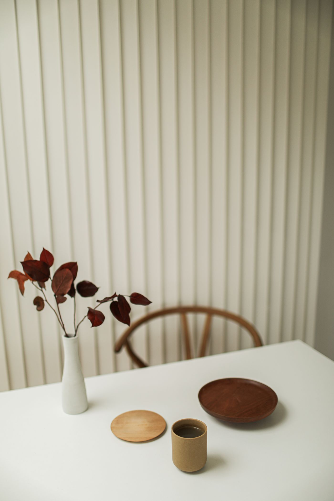
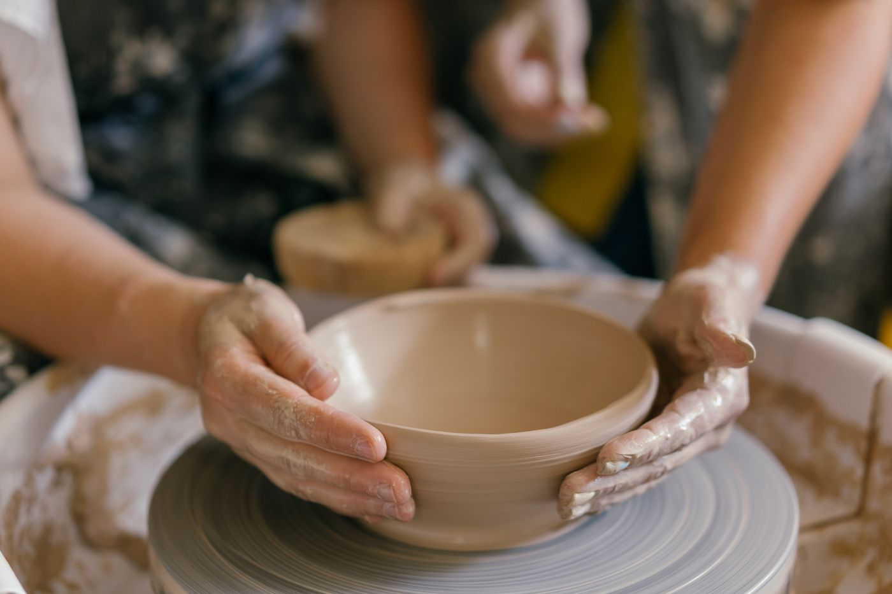
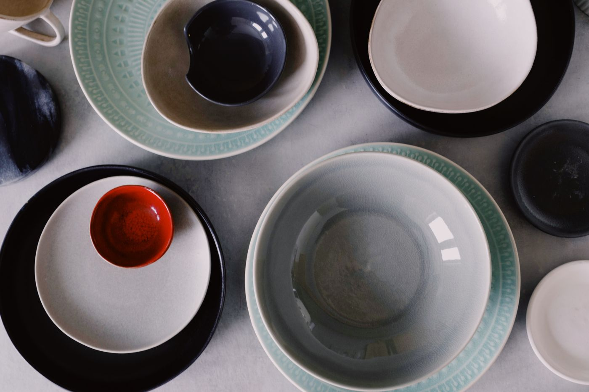

ДЛЯ ПЕРВОГО РАЗАТа самая чашка
Слепи чашку, которая удобно лежит именно в твоих руках. Выбери форму, ручку и настроение.
2 400 ₽ / человек↗
МЕНЬШЕ СПЕШКИ. БОЛЬШЕ ТВОРЧЕСТВА.
Глина, тёплый свет и время для себя.
Создай свою первую керамику — даже если
никогда не пробовал.
Не нужно уметь.
Достаточно любопытства.

НЕ ИДЕАЛЬНО. ЗАТО ТВОЁ.01 / МЕСТО ДЛЯ НОВОГО ОПЫТА
Керамика — маленькая пауза в большом городе. Здесь можно отложить телефон и сделать что-то настоящее.
«Форма» — концепция уютной мастерской, где важен сам процесс. Начни с простого: чашки для утреннего кофе, тарелки с неровным краем или вазы для одного цветка.
02 / НАЙДИ СВОЙ ФОРМАТ
Один вечер. Новый опыт.
Вещь, которую захочется оставить.

ДЛЯ ПЕРВОГО РАЗАСлепи чашку, которая удобно лежит именно в твоих руках. Выбери форму, ручку и настроение.

ЗНАКОМСТВО С КРУГОМПоймай ритм вращения и почувствуй, как из кусочка глины рождается твоя первая ваза.

ВДВОЁМ ИНТЕРЕСНЕЕПроведите время вместе и сделайте пару тарелок. Похожих по настроению, разных по характеру.
Учебная концепция: форматы и цены приведены для демонстрации сайта.
03 / ОТ КУСОЧКА ГЛИНЫ ДО ЛЮБИМОЙ ВЕЩИ
Вдохновись примерами или придумай свою вещь. Эскиз не обязателен.
Разомни глину, попробуй фактуры и постепенно создай форму.
Выбери цвет глазури и детали. Маленькие неровности делают вещь живой.
Сушка и обжиг требуют времени. После них керамика становится прочной.
04 / ВДОХНОВЕНИЕ В ПРОСТЫХ ВЕЩАХ
Не гонись за симметрией.
Следуй за любопытством.
05 / ВРЕМЯ ДЛЯ СЕБЯ
Выбери занятие и заполни форму.
Первый шаг проще, чем кажется.
Это учебный сайт вымышленной мастерской. Форма проверяет данные в браузере, но не отправляет заявку и не сохраняет личные данные.
ЕЩЁ НЕМНОГО ЯСНОСТИ
Для знакомства с ручной лепкой опыт не нужен. Начни с простой формы и постепенно добавляй детали.
Подойдёт удобная одежда, которую не страшно испачкать. Убери длинные волосы и сними украшения с рук.
Глине нужно высохнуть, после чего изделие обжигают и покрывают глазурью. Точный срок зависит от технологии и загрузки печи.